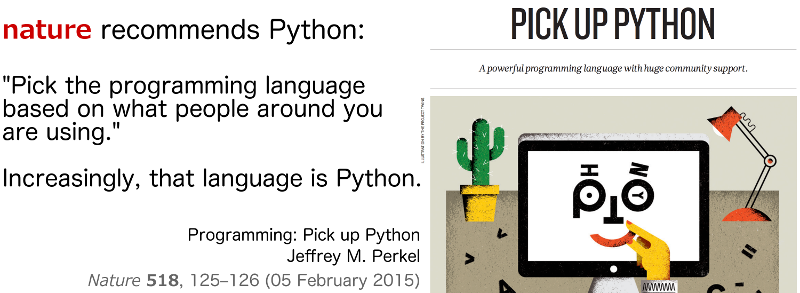

Python Tutorials
ACM Student Chapter | KAUST | 2015
| Venue: | University Library Computer Room, |
| Level 3 | |
| Dates: | February 15 - 19, 2015 |
| Registration | |
 |
Announcements
[15/02/2015]: Basics tutorials are now updated, and our solutions for the exercises are available. Please check the repository or use the links in the schedule below.
[13/02/2015]: Please note that it is not required to bring your own laptop in any of our sessions. All necessary software has been already installed to the library computer lab workstations. However, if you want to bring your laptop please follow the setup instructions.
[13/02/2015]: We appreciate your high interest for our Python tutorial! Please note that all tutorials are already full. New registration will go into a waiting list. If for any reason you are not able to attend a tutorial, please let us know in advance by sending an email to acm.chapter@kaust.edu.sa.
[05/02/2015]: The ACM KAUST Student Chapter is pleased to invite you to take part in a week of Python tutorials, February 15 - 19, 2015. Before attending, please register here.

Schedule & Structure
Topics covered:
- Basics of Python & NumPy ,
- Visualization Tools,
- Advanced Topics: Object Oriented Programming, Optimization, Machine Learning.
| Day 1: Sunday, Feb 15th | |||
|---|---|---|---|
| 12:00 - 13:30 | Basics: Introduction to Python | Maruan Al-Shedivat, Yiannis Hadjimichael |
Add to calendar |
| 14:00 - 15:30 | Basics: NumPy & SciPy | Yiannis Hadjimichael | Add to calendar |
| Day 2: Monday, Feb 16th | |||
| 10:30 - 12:00 | Basics: Mini-project | Emaad Ahmed Manzoor | Add to calendar |
| 13:30 - 15:00 | Plotting and Visualization | Maruan Al-Shedivat | Add to calendar |
| Day 3: Wednesday, Feb 18th | |||
| 13:30 - 15:00 | Advanced Topics: Object Oriented Programming |
Maruan Al-Shedivat | Add to calendar |
| Day 4: Thursday, Feb 19th | 14:00 - 15:30 | Advanced Topics: Optimization & Machine Learning |
Yiannis Hadjimichael, Maruan Al-Shedivat |
Add to calendar |
Description
Day 1: Basics
This is a beginners' level tutorial where we focus on the basic syntax of the language and essential functionality as well as the fundamental packages NumPy & SciPy. The first session targets to give a comprehensive intro, while second focuses on specific and cool examples.
Session I: Getting started with Python: Using iPython notebook, syntax, I/O, NumPy & SciPy.
Session II: A few cool and interesting hands-on examples of Python usage.
Day 2: Plotting and Data Visualization
The second day focuses on using Python for data visualization and introduces the widely used Matplotlib and other packages such as Seaborn, and Bokeh. During the first session we will discuss the main Python graphics concepts such as figures, axes, etc., and will work through a number of quick examples. There will be a simple mini-project given as a homework. The second session builds upon our knowledge of Matplotlib, and walks through a few more techniques, such as complex plotting.
Session I: Introduction to Python plotting and visualization packages: Matplotlib, Seaborn.
Session II: Advanced visualization techniques using Matplotlib. Interactive graphics with Bokeh.
Day 3: Advanced Topics: Object Oriented Programming
In this tutorial we introduce object-oriented programming (OOP), Classes and objects, functions, scopes and closures, as well as cover useful logging techniques.
Day 4: Advanced Topics: Optimization & Machine learning
During the first part of this session we will cover optimization using SciPy and OpenOpt and in the last part some machine learning techniques with Scikit-Learn.